An edited transcript of my talk at PyCon Australia 2019. More about me on my homepage. (note: this is a rough draft; editing and hyperlinking remain on my todo list)
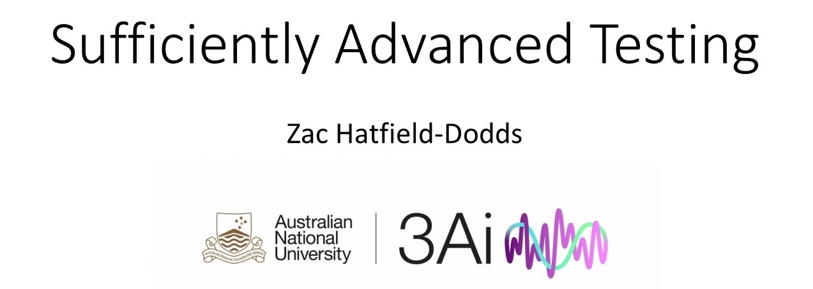Let's get into the deep dive talk that I proposed on sufficiently advanced testing. After PyCon Australia 2018, people wanted more "expert" level content, so the deep-dive talks were created. That means I had no examples to base my own talk on, but also get to invent what I think a deep-dive talked should be. So what am I trying to do today?
I decided that I would pitch this for an audience which was comfortable coming to a talk advertised as expert level - so there will be some terms that I'm not going to explain from first principles. On the other hand, I'm not aiming to require any specific expertise or experience with advanced frameworks: because advanced testing is a niche area, the whole idea is that this is the introduction for experts in other things who haven't learned as much about testing as they would like to.
My goal is to focus more on ideas than specific tools, especially because many of the ideas do not (yet!) have a corresponding tool in Python; to change how you think about testing; and right at the end to give you a single concrete takeaway you can actually implement.
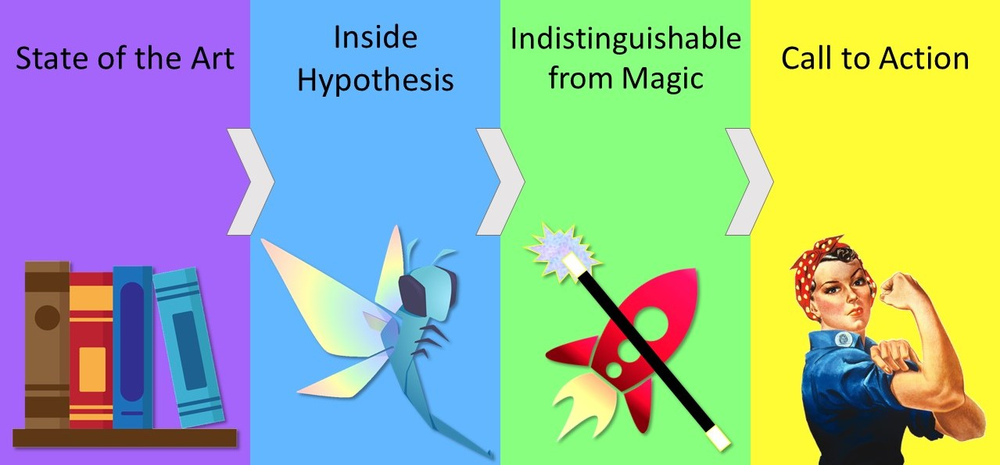The talk is organised into four parts.
First I'm going to talk about the state of the art of testing - how we come up with test cases and how we can make computers do it for us.
I'm then going to give an overview of how Hypothesis is implemented - what it actually takes us to put these techniques into practice with reasonable efficiency.
In the third section, which might be my favorite, I'll talk about techniques I think of as indistinguishable from magic. These tricks are just super cool, so cool that it seems they can't possibly work and yet... I won't say they do, but they might if we implemented them.
Last of all, I promised a concrete takeaway and so we'll finish with a call to action for something specific that you can do on Monday.
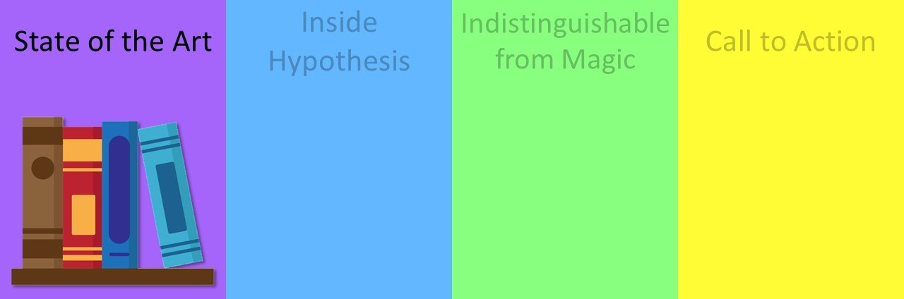For this talk I'm going to define testing as "any technique where you assess whether or not your code is correct, whether it's doing the right thing, by actually executing the code". There are many kinds of tests, but even more ways to write better software.
We could for example use a tool like
mypy for type checking so we annotate our code for each
function. We declare what type we expect that argument to be, and a type-checker can read our
source code and determine if there are any places where we're calling that function with a type that
we didn't expect. This is actually really useful, especially on large teams and codebases, but
I'm not going to call that testing.
One of my favourite techniques is getting enough sleep the night before. I find I write much better code... then I get twitchy if I have too much caffeine and if I hit the wrong keys that doesn't help. So sleep also prevents bugs, but it's not testing.
Code review is another great one. There can be human code review; for example a workflow that's become familiar to many of us through GitHub where you propose a change to some project and a different human - not the author of the change - has to review and approve it before the pull request can be merged. The exact process of code review varies between projects, but the fundamental idea is that at least one other person thinks it's a good idea to merge that change.
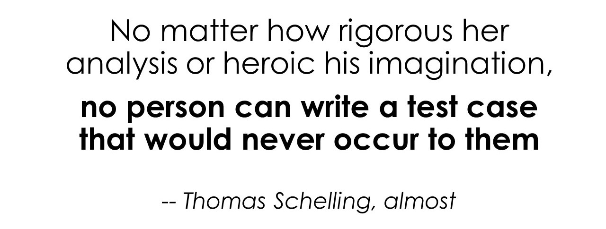How exactly do we write tests? How do we work out how we execute our code?
The traditional way of doing it, which most of us will be familiar with as unit tests, is to think of some
input for a function. For addition we might try to add one and two, and then we call our function
your_add(1, 2) and then we assert that we got the expected result - three, if I'm
implementing addition - but this has a couple of challenges.
The most serious I think is actually the one written on the slide: if I think of an edge case I fix the code and write a test for it. Unfortunately writing tests doesn't make me much better at thinking of edge cases, so I will probably miss the same ones that I forgot when I was writing the code! However carefully I think about things or how many test cases I try to write, there are certain things that would just never occur to me to test. Sometimes that's because I truly don't understand the system that I'm working with, and I'll give an example of that right at the end of the talk. Equality is trickier than you might think!
This fundamental challenge isn't the only problem with traditional testing though: another one is that humans don't scale as well as computers do. For every test case that we write, a skilled human had to sit and think carefully and type out every single input to our code. While this kind of "auto- manual" testing - automated execution but manual creation - is really useful for regression testing to make sure that no bugs don't re-enter our code base, or for testing edge cases where we suspect that bugs might occur in the future, I actually don't think it's suitable as the only form of testing that we do.
Whether that's what you might call unit testing of very small functions or integration testing or even end-to-end testing, having humans specify exact inputs and outputs doesn't scale as well as I think we need our tests to scale.
So what else could we do, to complement our auto-manual tests?
One cute option is exhaustive testing. Conceptually this is really simple: all we do is we execute every possible behaviour of our code and we check that each one is correct! Of course there's two problems here. The first is that we probably don't have time to check more than a tiny fraction of the possibly trillions or infinite number of possible behaviours; and the second is that it's really hard to tell whether the behaviour is correct. If you don't compare it to an exact output, how do you know whether you got the right result?
This gets even harder when your requirements are fuzzy. We might call them "business logic" or "user interviews" or "hallway usability testing", and if you're on extremely hard mode the requirements might even change over time. Building a system where running the test takes longer, enormously longer, than you expect to have before the requirements change does not sound like much fun to me.
There is some hope though, because computers are really fast - we can't test everything, but we might well be able to test enough... and the oldest trick for this is simply to put complete garbage into the program and see what happens.
For any image parser, for any network library, and for most command line tools putting in random input should never cause it to crash. The program should either do something - hopefully something useful - or emit a specific error code or exception.
Let's consider how this might work, for the simplest possible program. It's a single function,
func(arg: bytes) -> bool, which takes one argument (a string of bytes) and returns
True if it worked or False if it didn't.
Conveniently most programs are implemented on digital computers which operate on bits so this simple function which takes bytes actually matches up surprisingly well with a lot of programs that we are actually interested in. Compiled programs for example almost always operate on bytes, and anything else is only a parser away!
So the oldest automated testing technique in the book, back when Fortran was new and there were no jokes about real programmers only using Fortran, was based on punched cards. You take a deck of punched cards, maybe from an earlier draft of the program or perhaps from today's database dump for payroll. You shuffle it up so that was nicely out of order, and you feed it into the computer. If the electromechanical computer stopped you had probably had a logical bug in your software... or maybe a moth trapped in your hardware!
This is an old technique, but these punched cards are much older: those pictured are the program for a Jacquard loom. That roll of cloth was produced in a few hours and entirely by a machine, where it would have previously taken much longer for skilled workers. The resulting anti-tech backlash of 1779-1815 led to the coining of the word Luddite.
Time for a clarification: "randomness" can mean a couple of different things, and I realised while rehearsing this talk that I was using it to refer to several distinct concepts without providing a definition. Random inputs, random programs; one of the lovely or terrible things about the word "random" is that it can mean so many different things.
When we talk about randomness in computing we might mean numbers which are truly unpredictable they come out of some kind of physical phenomenon that we can't predict, so we can't guess what the next number will be.
(One of the coolest sources of randomness on the internet is at CloudFlare headquarters: they seed some of their random number generators with a webcam and a wall full of lava lamps. So there is this wall full of lava lamps that helps keep the internet secure and I just love that but if you don't have a wall full of lava lamps handy there are still ways that you can get numbers which are sufficiently random.)
Or maybe you're even doing something like a statistical experiment or a simulation you want to be able to reproduce it later, and know that your results were not just a coincidence but your code was actually working, maybe even fix a bug in your code and run it again and get the same results. You can't do that with true randomness, but you can do that with what we call pseudo-random number generators.
and so these are very complicated programs which will jump around the numbers in a very unpredictable way but if you set the internal state to something particular you'll always get the same sequence of numbers out when you drive it so Python's random module is actually a pseudo-random number generator and if you're thinking of doing something with security you should not use it because it's not truly random you should instead use the secrets module which is suitable for secret things that's because Python doesn't have what's called a cryptographically secure pseudo-random number generator which is far too many words to describe a simple thing it's a sequence of numbers where you can't predict what number will be next ever simply by observing them I think that's probably enough now.
This is a set of dice. Depending on how you count it, they might be random, pseudorandom, or not really random at all! The interesting thing about dice is you might think that there's an even chance of each number coming up each time they are rolled, but if you have dice like this that are not perfect cubes tossed by an unbiased hand, certain sides will come to rest face up more often than others. If you have a heavy die for example with divots cut out to indicate the numbers, even if you roll it completely randomly it is slightly more likely to land with the six upwards was that side is slightly lighter but we wouldn't say that the die is non-random we would say that the die does not have a uniform distribution.
So for a thing to be random it is not necessary that every possible outcome be equally likely or have any other particular distribution of outputs - it need not be a bell curve or an exponential curve or any other shape; it is sufficient that it's difficult to predict the next thing for me to colloquially call it randomness.
With that digression about randomness let's go back to thinking about programs.
How do we work out what programs actually do? One answer in Python, and in other languages, is to use tools which measure code coverage.
Code coverage tools fundamentally answer two different questions by instrumenting your code and checking which parts executed and logging that somehow. Those questions are "what just happened?", and "what didn't happen" - it turns out this is surprisingly useful.
If we know what happened we can track what logic in our code was actually executed. You could use this in production to work out which parts of your code are most important to optimize, or at testing time you can see the code which is not executed by your tests. If you executed some part of the code it's possible that it still wasn't well tested, that it was executed incidentally when we were checking some other piece of functionality, but if a particular function was never executed at all we can be pretty confident that it was not tested either.
There are many different coverage metrics you could use with varying levels of detail The simplest is function level - decorate each function, class, method, and module and just see if it gets executed. This is fairly useful but in Python we can do better.
coverage, one of the leading Python
modules, hooks in to the interpreter and reports whether each line of code was it executed or not.
It also support branch coverage, and more recently can
attribute coverage to individual tests!
Line coverage lets us go through and determine for example that the else block on
some if-statement was never executed because the condition was always true.
Useful to know if you're looking to delete code or work out where you need additional tests.
We can go further with branch coverage, which tracks each side of an if-statement.
That lets us detect things like if-statements where the condition is always true,
meaning we either don't need that statement or we're missing a test where it's false.
Along with lists of uncovered lines and branches, coverage reports the percentage
of analysed code which was covered. By a show of hands, most attendees use percent coverage
but only a few love it. I'm not a huge fan of using that as a metric either.
It's a good indicator of the rough state of your code base, but becomes problematic if you're using a threshold for something like merge approvals. When you need at least 70%, 90%, whatever percent coverage, unrelated refactorings can actually make that number go down. If you delete trivial covered lines of code, code which is not doing anything useful but is still executed by tests then you can make your coverage proportion worse. Maybe this is old-fashioned, but if I'm tracking some number that I think represents my code quality I don't want it to go down where my code quality goes up.
If you can, try to get coverage to spit out an exact number of uncovered
lines and mandate that that never passes a particular threshold or you can simply annotate your
code with no cover bits on the parts which you don't mind being uncovered and then require 100%
coverage. That's actually my preferred technique because it forces you to make an explicit
decision - and one which you can grep for in your code base - about which parts
of this code we decided we're OK with not testing at all.
When you put these ideas together tracking of coverage and then random inputs you get a technique called fuzzing.
Fuzzing is the idea that uniformly random inputs, the kind we would get from shuffled punched cards
or from piping /dev/random into our binaries is unlikely to find any but the most
trivial bugs. Almost all possible inputs will simply trip across some validation logic.
In an image parser it might be the bit that checks whether the file header starts with the four bytes
\x89 p n g - if not, it cannot be a valid PNG file. Your chance of random bytes matching that
string is 1 in 2564, less than one in a billion, and that's a fairly small number.
Instead of putting in uniformly random bytes, we can use a genetic algorithm. We instrument our programs to watch the coverage, tell what behaviour is being executed, and then start by putting in random things. When we find an input that does something we haven't seen before, we take that input and mutate it a bit. Change it around, maybe combine it with another, put it back in, and see what happens.
Pretty soon we're likely to find that an input which starts with \x89 goes down a
different branch, then \x89 p is different again! Before you know it you've developed
this testing tool which will
pull valid images out of thin air just by watching the behaviour of the program
that's meant to deal with them.
So by using coverage feedback as a proxy for what the program is doing, we can drive up the chance that we execute some part of the code which... crashes. That's the problem: the only thing we can detect with conventional fuzzers is a crash. The second part of this trick is a collection of ways to make bugs in our programs correspond to crashes instead of silent misbehaviour. In compiled languages there are many sanitizers which will do this - for addresses, for memory violations, for undefined behaviour; but the one that's common across all languages including Python is assertions.
My favourite definition of an assertion is
"a statement in a program which will do nothing unless there is a bug". So an assertion is something
which should always be true - if it's false then it'll raise an AssertionError,
that exception will propagate, and you'll get a crash or your test will fail.
This means that when we evolve bad inputs we can check not just "do we have a crash error" but "do we trigger any assertions". If you start and end your functions with assertions that the input is roughly what you expect, that data round-trips, or that it's in canonical form you can often uncover your own misunderstandings or your future self's misunderstanding of past code simply by running the same tests against it.
Asserting your API contracts is therefore
a great design for testing.
Just remember that assert statements
might not run at all,
and never rely on them to check user input.
So that's part one! We can go from complete randomness to generating things which are very likely to find bugs which would seem impossible by mere chance.
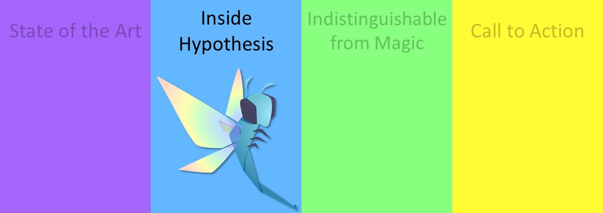So it's time to get back into Python a little more, with the implementation of a tool for property-based testing. I'm going to start by telling you what property based testing is not.
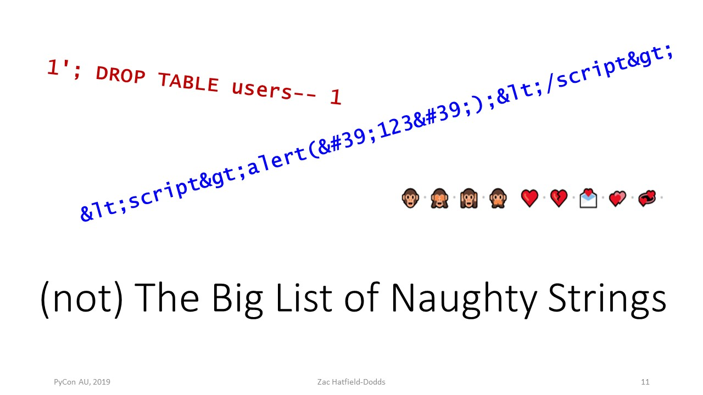Property based testing is not just trying a very large number of tests - though this is a super useful technique!
You can find the big list of naughty strings on GitHub, a text file thousands of lines long, where every line is some bit of text which has caused a bug in some other piece of software.
Some are SQL injection attacks; others are cross-site scripting problems, some are just emoji.
I really wanted to put one in here which is Hebrew text which alternates right-to-left,
left-to-right, and finally right-to-left again... but when I put it into my slides PowerPoint crashed!
I don't mean to diminish the value of this kind of testing, and if you're dealing with things which
should accept arbitrary strings as input you should definitely grab the big list of naughty strings and
try them all - it's really easy with something like
@pytest.mark.parametrize.
There are a couple of reasons we might not want to do this for literally everything though. The big one is that someone has to come up with the big list (though in this case they accept pull requests so you can help out). This is great for standard tools or protocols which have multiple implementations that can share a test suite, but without that it's just an awkward way to structure a conventional test suite.
The fact that test failures based on an input corpus are reproducible, rather than flaky like those from a naive random generator, is better than nothing - but what if we could have the discovery power of randomness as well as minimal and reproducible examples?
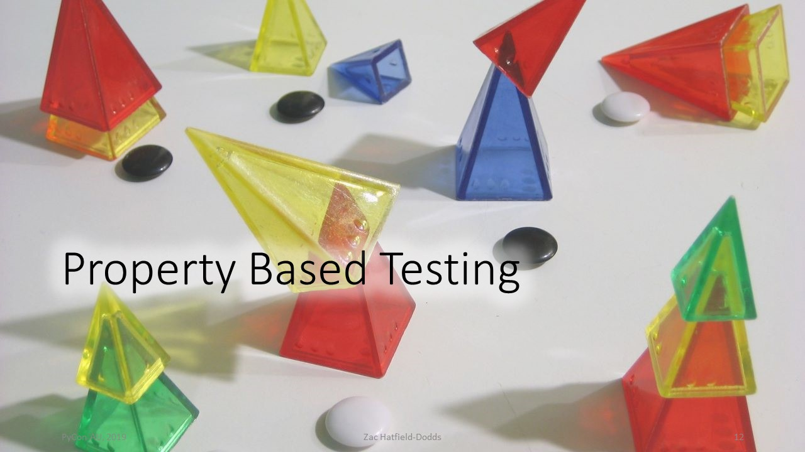The simplest property-based tests look a lot like fuzzing: you just get an input, call the code you're testing, and see if it raises an exception. The first difference from fuzzing is that the input is probably some kind of structured data (like "a string", or "a list of integers") rather than raw bytes. More on that later.
Add assertions to the test function, and you can pick up the power of even the most expensive contracts without runtime overhead. It's often possible to write more specific assertions for a subset of possible inputs - for example, passing positive integers to a function which accepts any real number, or sorted lists instead of shuffled.
The most powerful property-based tests are those which could not be expressed as contracts of a single function call. For example, we might assert that:
sorted() on its own output, nothing changesjson.loads() on the output from json.dumps()
returns the original valueThere are many such properties. Importantly, we don't always need to know the correct answer - or even be able to check that the answer is correct - to find bugs, because we can check the properties instead!
In extreme cases like simulations or machine learning, where we don't know how to relate inputs to outputs, we can still use metamorphic testing. Metamorphic relations exploit our knowledge of the purpose over multiple executions of the software.
So property-based testing gives you the power of fuzzing and the convenience of unit tests. It can scale down to just calling your function, and all the way up to complex scientific code and cutting-edge machine learning!
At this point I owe you a really quick overview of Hypothesis itself.
Whatever your concrete problem is that you need to solve with Hypothesis we have probably solved it and documented it... but this is not a talk about Hypothesis so much as a talk about the general family of testing techniques, so if you want to learn about that check the docs or my other talk about it.
Here I'm going to talk about the implementation: how Hypothesis minimizes examples, then how Hypothesis runs your test function, and finally how Hypothesis generates inputs. This is completely backwards but I promise it makes more sense backwards than forwards.
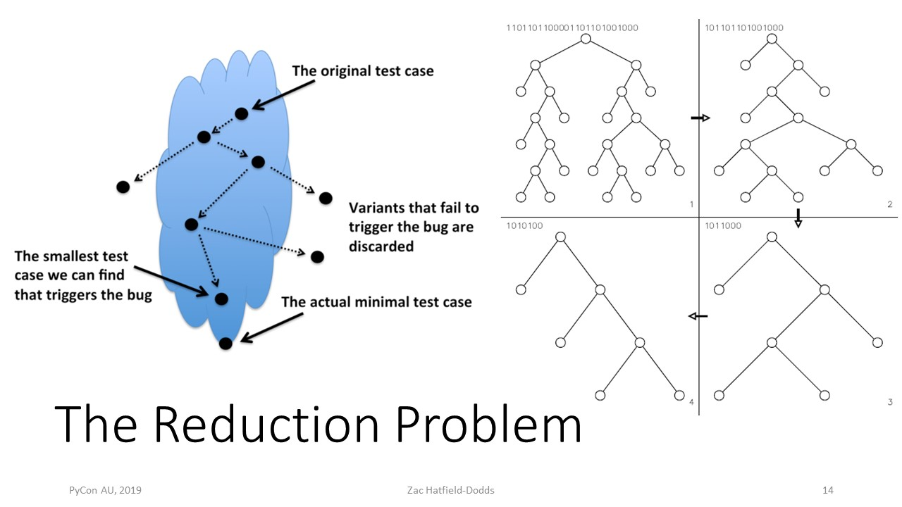Having found a bug with some random input - in the next section - our final challenge is to present a minimal reproducing example. This isn't just required by Stack Overflow - understanding and debugging minimal examples is far easier than large ones. Since I can't come around to your office and hand-minimize every example for you, we need to automate that process!
Fortunately, dealing with strings of bytes under the hood means that we have a natural way to decide which of two examples is simpler, and also some generic simplifying operations. This is really important when looking at complex data like JSON: is a list simpler than a dictionary? We can sidestep the problem by shrinking at the level of our bytes. The same trick gives us a total ordering on inputs, and caching the byte string is a cheap if not exhaustive way to avoid repeating inputs. So if we can find ourselves some strings of bytes, there are a couple of clear heuristics we could use to sort them by simplicity. First, shorter strings of bytes are always simpler - minimal inputs are as small as possible! Second, for strings of the same length we use lexical order; comparing strings by the first unequal byte. We could use some other way of deciding between equal-length inputs, but lexical order corresponds to smaller unsigned big-endian integers and we have been careful to design our other strategies to match.
Every input can be ranked in comparison to another candidate input and this means that it would be valid to simply go this is the byte string that found a bug - let's try just chopping it in half does the first half only find the same bug what about the second half and we can do a sequence of these operations analogously here the dotted lines between dots.
Dots are executions of the test, the dashed lines indicate what we try to retake that input and make it smaller given any possible change to that input we can tell whether if the test still fails in the same way it would in fact be simpler if it's not simple and we don't even have to run the test we can just discard it and by running them we can slowly evolve our way down not necessarily to the simplest possible boat or the simplest possible input that triggers that bug but to a very much simpler one. Now there's a couple of benefits of this if we look at the diagram on the right of this binary tree all of these will say trigger the same bug and going around clockwise we've simplified it and by the time you see the one on the bottom left if you look at that and you think I have some bug in a binary tree function the bug might be related to the fact that the binary tree is unbalanced and in particular when you look at that you can go if it was possible to simplify it further it would have been simplified further so it must be something about the unbalanced nature of the tree.
While not strictly required for property based testing to be useful in practice, test case reduction is a really, really important feature to make people enjoy using the tool.
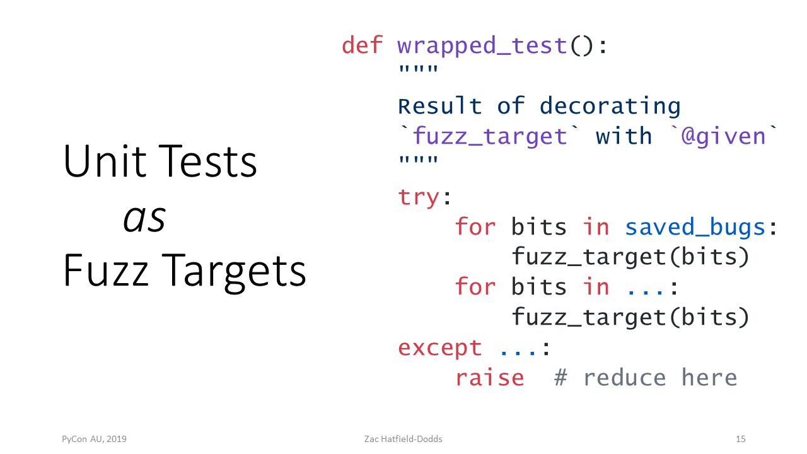Let's go through to the middle part here we think about how do we treat unit tests as if there were fuzz targets. I've said before right that we could think of any program potentially as taking some string of bytes as input and doing something and so that's effectively what we do Hypothesis gives you a decorator which internally wraps the test and we'll try first of all rerunning every previous byte string that we've seen caused some particular bug so you don't have the usual problem of random tests that if you execute the test and they're executed again the bug may or may not happen the second time that sucks when you're debugging right when you're never quite sure if you've fixed it or if it's just decided to go away until tomorrow or next week or 3:00 a.m. so first we replay all of the existing bugs and then we generate a bunch more random bits so we do the kind of mutation or fuzzing and for each of them we just call the first target and if there's an exception then we grab whatever input caused it and we do the reduction step making sense and so the only wrinkle here right is how do we go from strings of bytes to the objects and the values that we actually use in Python and there's a couple of neat tricks the first is of course that in a computer everything is secretly bytes under the hood right numbers are bytes strings are bytes lists different bytes dictionaries are bytes everything is buts and so all we need to do is convert our bytes into some more meaningful value this is a known category of software and they're called parsers.
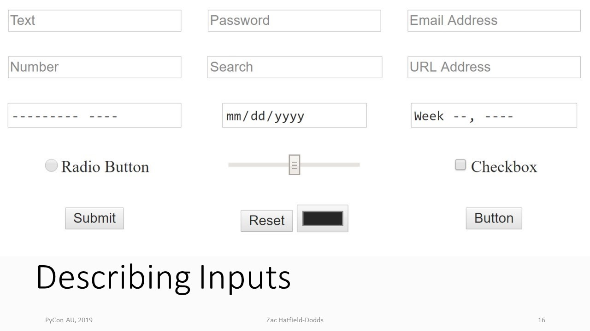A parser is a program which takes a string, and converts it into structured values for us. My favourite API for creating parsers, which we use the Hypothesis, is parser combinators.
A parser combinator is a function which takes a couple of different, smaller, parsers and sticks them together somehow. You could for example have a parser which is the list parser: it recognizes an open square bracket and it knows to look for some value and then a comma and then another value or a closing square bracket. That's all the list parser needs to do, so to get a parser for e.g. a list of integers you combine the lists parser with an integers parser.
This is exactly how it works in Hypothesis: "integers()" for integers, "lists(integers())" for lists of integers, and so on. "lists()" also takes optional arguments like min_size=3, unique=True, and so on.
Under the hood we implement strategies in the private API as classes which just have a get bits function so all they do is look at the next part of the input and then convert that if they can into whatever their output type is most of the strategies that we provide though don't even have to do that we can implement them in terms of other strategies and that's the public API to you define your own strategies for whatever type or class or collection or specific kind of data you need to call so below that there are a couple of other tricks we use and I'm skipping over so much of the cool stuff about how you can generate Django models or Pandas data frames or things accepted by a regular expression - you can take a regular expression and Hypothesis will give you strings that match the regular expression it's super cool and that bit wasn't in my notes it's just so exciting - under the hood there are a couple of implementation tricks that are quite important the first is that whenever you define a strategy if you're in the internal API or the public API we make sure this mostly doesn't matter but internally we try to implement all of our strategies in a way that shrinks well that allows the reducer to make progress using the operations that it knows about so one example of this is when we're generating a list of something the natural way to do this might be first get a number to decide how long the list will be and then get that many elements and put them in a list the problem is when it comes to reduce it to successfully reduce that one you would have to simultaneously reduce them integer by one and delete a list element and in general this is going to be less efficient than what we actually do which is we calculate given our expected list length with what probability should we add one additional element then we draw a number and if it or draw a Boolean with that probability and if it's true then we get that element if it's false we're done and the list is over and that means that instead of having to delete or change two parts of the byte string in combination at the same time we can simply delete a region and it will locally have that effect defining test case reduction in terms of strategies rather than having to define something specific to for example each type of number gives us a couple of other examples if you imagine your test only takes even numbers for example with Hypothesis approach you can simply take the number and then multiply it by two and that strategy will then only give you even numbers but when it shrinks every number it tries to produce will still be even if you're using something like quick check in Haskell you actually have to put another filter in place in your test to make sure that when you generated even numbers it didn't try to shrink by feeding you odd numbers that tends to get you unrelated errors which is not fun when you're debugging.
If you're wondering about the performance of this come talk to me in the hallway track but in short premature optimization is the root of all frustration in testing - that's a lie there are lots of other frustrating things, but it will be frustrating - it's fast, it's certainly fast enough.
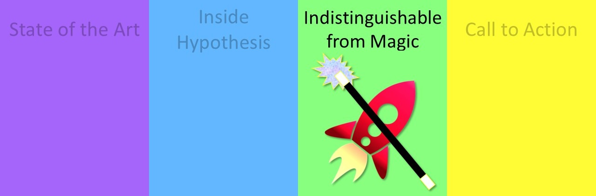Now we get to my favourite section of the talk the cutting edge techniques that to my knowledge are not available in Python nor widely used at all.
Sadly, at least if you're an enormous nerd about testing, there's this vicious cycle where we start with few users, a great idea, and less-than-great tooling. Few users means few contributors; few contributors means the tools aren't awesome, and if the tools aren't awesome few people will use them. Fortunately we can change this together.
If you're interested in these techniques, consider that people have not tried investing significant effort in implementing them and found it's too hard - in most cases a paper has been published and that's it; the techniques have barely been tried at all. If you want to invest a week in trying to implement them you could get somewhere really cool.
First technique: swarm testing. This one is unusual among the more advanced magical techniques in that it doesn't use any feedback or inspect your code at all. This one simply finds more bugs with the same property based tests that you already wrote!
Traditionally, property based testing would do a basically uniform random exploration based on the state machine or the grammar of the inputs that were described. For integers any integer would be equally likely; if you are operating on a stack you will be about equally likely to push elements onto the stack or pop them off, and so on. This means is you're extremely unlikely to exercise the really weird edge cases - if it's equally likely that you add something or subtract something, it's very unlikely that you do fifty of one in a row and trigger some kind of overflow bug.
Swarm testing generates a 'swarm' of configurations, many different probabilities for example between adding and subtracting and then each time we go to generate an input we pick a distribution and then we generate the rest of the input. This makes us more likely to generate weird things, diverse things, things which are unlike anything else our code has ever tried... it's a way of making property based testing more creative.
This seems at least situationally useful! The advantage of swarm testing is that it doesn't require any configuration from the user - the user doesn't even need to know it exists, let alone what it's called or how cute ladybugs are.
Why haven't we implemented this Hypothesis? We'd have to change the underlying model that we use! We actually do plan to get around to it at some point, but we're all volunteers and have no free time so unless a sponsor appears it could be a long time.
Technique number two: targeted property based testing.
It's basically regular property based testing but we add one thing instead of tracking coverage the way that fuzzers do we give users an extra part of the API a target function where they can feed in some floating-point number to tell us how weird is this input how large is it how complex is it what's the compression ratio and then the engine will preferentially mutate towards things which maximize that metric longer lists lower compression ratios things which get higher antivirus scores and so just as fuzzing evolves things based on the coverage or eventually the number of bugs that's already found there we would then evolve inputs which tend to maximize whatever target metric you choose to feed in.
We actually tried doing this with coverage information in an earlier version of Hypothesis but eventually took it out, for two reasons. First, while it was somewhat helpful running under coverage is slower than running without coverage and so when we looked at this we thought if what people want is to find many bugs per second or minute or hour of time that they spend running hypotheses often you would actually get more bugs if you run it with coverage disabled because it's four to five times faster so making it twice as likely to find a bug for each test case in fact reduces the number of bugs we find.
Second, the way coverage is implemented in Python it uses a trace function so extra code is called every time the stack frame changes in the interpreter and this means that it's incompatible with many debuggers and the time you most need a debugger might in fact be when you found a bug and it was kind of fragile so given that it wasn't helping much we took out the coverage based stuff but we're quite excited about the possibility of targeted property based testing.
In my opinion targeted PBT is a fairly fragile technique. While in certain situations it is impressively powerful it also relies on the use of choosing a useful target function and often there isn't a target function which corresponds really well with bugginess so we might be able to drive to particular extremes of our input space but whether or not that actually helps us find both is kind of unclear. That said, Hypothesis added supported for targeted PBT in version 4.38 (2019-10-01) so you can try it out, and whether it works for you or not we'd love to hear about your experience.
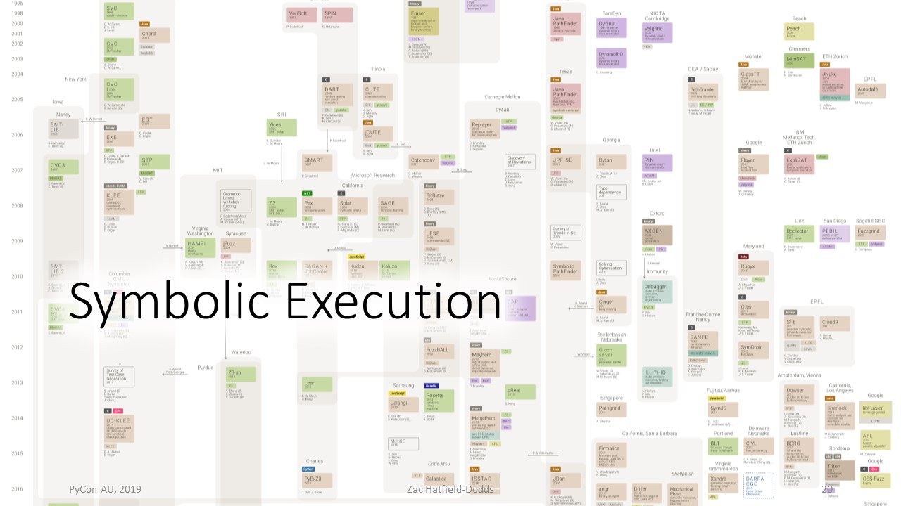Third technique: symbolic execution.
Instead of executing your code with specific values, if you're using symbolic execution you analyse the code you calculate the different branches that can be taken through and you make an exhaustive list of all the distinct paths through your code.
This is a little more tractable than exhaustive testing; it might be that for the purposes of your code every positive integer is treated identically and so with symbolic execution you could analyse all of those at a single go.
I'll admit that by my definition of testing where your code is actually executed this is not testing but bear with me!
In my view this is somewhere between fragile and futile for large Python functions. You can do it reliably for small functions, but when you get up to larger code bases you come into a couple of problems. The first is the Python is amazingly magical, for example you can patch things at runtime or even execute code that was delivered as bytecode over the network, and that means that it is really hard to be sure just from reading the source code exactly what Python will do. This is made harder by the fact that Python doesn't actually have a standard semantic definition; Python has a reference implementation which means that by definition Python is whatever the CPython interpreter does! That makes it pretty hard to write a symbolic execution engine because the behaviour of the CPython interpreter keeps changing when they keep working on it. All that said I really like symbolic execution. If only there was some way to make this work...

Concolic execution is where we combine concrete values and symbolic execution.
It's a bait-and-switch right we do symbolic execution for a while and this is really cool and mathematical and abstract and then we're like oh no we have no idea what to do here we work out well what kind of specific actual Python value would have made it through this sequence of branches to get here then you generate it and you call the code and you see what happens it's total cheating and it's awesome.
To my knowledge no one is doing this for Python at all but it seems like it would be really cool! Because the chain of branches can get very complex, in practice we usually use what's called a SAT- solver to work out what combination of values would actually get to a particular part of our code. A SAT-solver is a thing which solves the Boolean satisfiability problem - in short, whether each of the variables in a Boolean formula can be replaced by either True or False and have the result be True. A SAT-solver will then use various heuristics and various special techniques to try to find some set of assignments to those variables which satisfies all of the equations. This is amazing because the problem is NP-complete! That means that we can always check the answer efficiently (just do the assignments and evaluate the formula), but there is no efficient way to find an answer - you just have to try the exponential number of possibilities. (If I'm wrong, you've just proved P=NP and won a million-dollar prize!)
SAT-solvers almost always work anyway. It's in principle impossible that they always work, and yet they usually work! I have no idea how that happens but I am so so delighted that they exist.
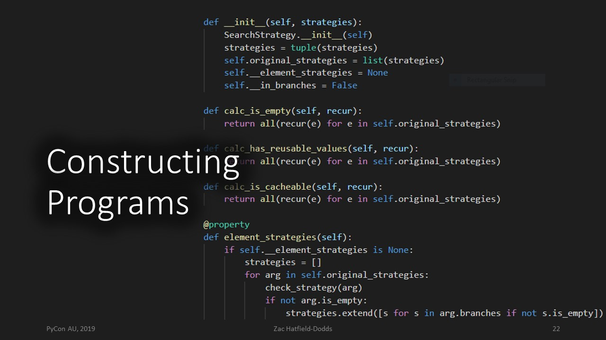The final technique which I will admit I am also really excited about is constructing programs. Not just a list of numbers, or some particular file format, but getting our property based testing library or our fuzzing tool to generate Python code itself!
This would be pretty cool - we could test everything from linters or auto-formatters; does the type checker work on arbitrary programs; we could even check competing implementations. Take PyPy and CPython - I could check that they execute when they execute any program they give the same output, and there are a couple of ways that we could do this.
We could look at the grammar of Python source code, and we could generate arbitrary strings which would be parsed by the Python grammar. I tried this it worked! I found a bug in the CPython parser because it turns out that the grammar of Python is not exactly describing what CPython really does... foiled by the reference implementation!
We could instead try to generate a syntax tree and then work out what programs source code corresponds to that syntax tree, so we could generate programs we could test our programming languages as well as the programs from writing them.
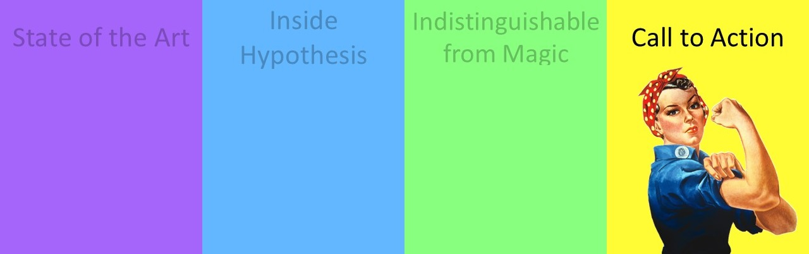Finally, I promised that we would have the section where I gave you something you could actually use! I've talked a lot about some cool tools and some great ideas, but can you actually use any of this stuff?
I want you all to go back to work or wherever you're going on Monday and write some property based tests! Sound good?
I'm getting some nods and some blank faces; you're probably thinking "Zac, you've told us how cool you think these are but you haven't told us how to actually write them" and you're right you know.
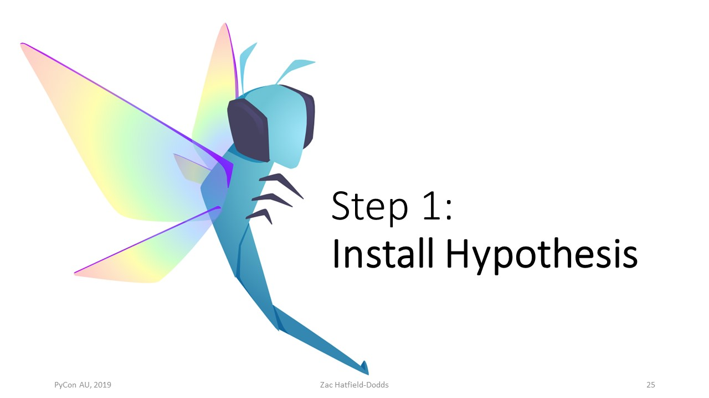
Step one is to install Hypothesis. You type in pip install hypothesis
or if you prefer conda you type in conda install hypothesis.
Hypothesis is compatible with every version of Python
supported by the Python Software Foundation.
That means that we still support Python 2.7, but we will drop it at the end of 2019!
Hypothesis is
compatible with a wide range of other things. We have very few dependencies - just
attrs - but many optional extensions and quite a healthy community ecosystem of third-party
libraries. If you use Numpy, Pandas, Django, or jsonschema, we have plugins that will deal with all of
those for you.
Let's walk through an example to see how this works.
def test_checkout_new_branch():
"""Checking out a new branch makes it the active branch."""
tmpdir = FilePath(self.mktemp())
tmpdir.makedirs()
repo = Repository.initialize(tmpdir.path)
repo.checkout("new-branch", create=True)
self.assertEqual("new-branch", repo.get_active_branch())
You probably have a test in your code base which at some point just has an arbitrary value in it, and you know that you could test more values if it wasn't such a pain to write them.
Find a test that looks something like this. This test is simply that if we start a new git repository and we create and check out a branch called "new-branch", then the active branch will be the new branch. So what happens when we want to abstract that a little more, to generalize it and not only consider the literal name "new-branch"?
def test_checkout_new_branch(branch_name="new-branch"):
...
repo.checkout(branch_name, create=True)
self.assertEqual(branch_name, repo.get_active_branch())
Well step one is simply to move arbitrary constants to keyword arguments. This test behaves identically to the old one; it doesn't depend on Hypothesis so you can do this before step one though step one is great. What we've got now is a variable which indicates the branch name and so our test semantically is saying given any branch name this should pass.
@given(branch_name=st.just("new-branch"))
def test_checkout_new_branch(branch_name):
...
The next step is to move that particular specific argument to a Hypothesis strategy. In this version we are using Hypothesis, we've got the "@given" decorator and we have the arguments to "@given" corresponding with arguments to our test function. Our strategy just generates the string new branch. We haven't changed the test semantically yet but we have started to use Hypothesis. Then of course abstraction is great, don't repeat yourself, so we'll extract that out to a separate function which returns a strategy for valid branch names. This means that we could reuse the strategy across any test that's using the names of branches and when we eventually go back and improve that strategy all of our tests will get more powerful so if our requirements change we have a single place where we can change to improve our tests.
def valid_branch_names():
# TODO: Improve this strategy.
return st.just("new-branch")
@given(branch_name=valid_branch_names())
def test_checkout_new_branch(branch_name): ...
Then we can try generalizing the strategy.
def valid_branch_names():
return st.text()
This is a strategy for arbitrary Unicode text. I will give you a spoiler and say that this one fails.
It turns out you can't name a git branch the empty string, you can't name it a space character,
you can't name it newline, and you're probably not meant to name it "master" -
but "master" is a valid branch name!
If you read man git-check-ref-format
you will see that the rules are extremely complicated, and that they vary by both operating system
and file system because branch names are also stored as file names.
def valid_branch_names():
# TODO: improve this strategy to find some more bugs!
return st.text(alphabet=ascii_letters, min_size=1, max_size=95)
We're just gonna take the easy way out and say sure we want text but we only want ASCII letters, not even dashes or underscores because there are rules about how many dashes you can have in a row and it turns out we need at least one letter. You can't have an empty string as the name, and no more than 95 letters because some get hosting websites arbitrarily cut off branch names at 100 characters and branch names technically include "head/" as an implicit prefix so between 1 and 95 letters gives us a valid git branch name.
@given(branch_name=valid_branch_names())
def test_checkout_new_branch(branch_name):
assume(branch_name != "master")
...
What do we do then it's at least possible that this will generate the string "master" being six characters and so we add at the top of our test function an assumption an assumption. "assume" is a function from Hypothesis which is much like an assertion, but instead of indicating that the test has failed it indicates that the input is problematic in some way and just tells Hypothesis look that one was okay but don't give it to me again and don't count that as a failure try again. So we can make our assumption right we can say any sequence of letters, but not the sequence "master", and this test should pass.
@given(repo=repositories(), branch_name=valid_branch_names())
def test_checkout_new_branch(repo, branch_name):
"""Checking out a new branch makes it the active branch."""
assume(branch_name not in repo.get_branches())
repo.checkout(branch_name, create=True)
self.assertEqual(branch_name, repo.get_active_branch())
We've now refactored our test completely to use Hypothesis and chances are we've discovered and had to read something about the manual. It hadn't occurred to me wonder what was a valid branch name in "git", because I always gave my things sensible branch names like "targeted-pbt" or "working-on-that-bugfix" or "oh-no-why-is-this-happening".
The end result once we finalize refactoring this we might have a strategy for repositories as well so that instead of creating a new empty repository we actually say this property should be true of all of them and so it's not just the master branch that we want to exclude but we can say given any repository and any valid branch name if the branch name is not yet in the branches in the repository then checking out that bridge means that the currently active bridge will be whichever one we just checked out this is about as close to a genuinely mathematical property as you will see in code which is not doing simple data transformation. You can test that stuff too right it's great it's easy but you can also test for more complicated stuff.
I hope I've convinced you that you don't have to start from scratch. You can find and incrementally migrate existing tests to take advantage of Hypothesis.
When you're ready to take that final third step, you can write an entirely new property-based test. For your first, I strongly recommend testing what we call a round-trip property. The best one is testing that when you write some data to a database or to disk and then read it you get the same thing back - this should be true no matter how you store files or put stuff in a database, since the whole point is that you can retrieve that exact data later.
This one is really useful because there tend to be a lot of different layers - file systems have subtle rules about how large things can be or where they go or what they have to be named and often I discovered that I didn't quite understand what those rules were.
If you don't have a convenient pair of write and read functions, if you're working on a networking thing a send and receive is quite similar, or if you're working on a simpler project a set and then a get of some property; just testing that when you round-trip data it always comes back. Let's go see a worked example.
@given(value=st.none())
def test_record_json_roundtrip(value):
assert value == json.loads(json.dumps(value))
We're testing that if we dump some value as a JSON string and then load that string interpreted as JSON to a value it's equal to the value we started with.
We can just try putting none in it to start with. This test passes for None it turns out if you serialize it to null and then bring that back from JSON you get None again, so we're all good so far, Incrementally we can improve that strategy. Let's look at None or Boolean or floats or text (Python 3 strings, ie Unicode).
@given(
value=st.none() | st.booleans() | st.floats() | st.text()
)
def test_record_json_roundtrip(value):
assert value == json.loads(json.dumps(value))
This version should not pass! There is a special floating point value called
not a number (or nan), which is
unequal to itself... numbers are equal to themselves but fortunately this float is not a number!
@given(...)
def test_record_json_roundtrip(value):
assume(value == value)
assert value == json.loads(json.dumps(value))
We can simply add an assumption: for any value which is equal to itself, when we serialize it to JSON and deserialize it, the new value should be equal. This passes, as it should, but all we're dealing with here is scalars. If we have lists or dictionaries, which JSON calls arrays and objects, we're not generating or testing those. Fortunately Hypothesis can also generate recursive data!
@given(
value=st.recursive(
st.none() | st.booleans() | st.floats() | st.text(),
lambda x: st.lists(x) | st.dictionaries(st.text(), x),
)
)
def test_record_json_roundtrip(value):
assume(value == value)
assert value == json.loads(json.dumps(value))
This strategy says starting with null or Booleans or floats or text we can take lists of whatever we have or dictionaries of strings to whatever it is we have and this recursive definition actually does describe all JSON. Feed it in to the same test, and...
It turns out this fails. I didn't know that this test fails until I was writing up a tutorial and I
thought "this will be a good example, I'll incrementally write a property-based test and use nan
to illustrate assume()", though I'd actually use floats(allow_nan=False).
Python lists are equal if and only if each of their corresponding elements are equal. Therefore, a list with
nan in it should therefore be unequal to itself, because nan is not equal to itself...
But Python has an optimization: list equality starts with if self is other: return True
This is much faster and almost always correct, except that not a number breaks Python's object equality
model and so if you run this test Hypothesis will duly spit out [nan], a list with a single
floating point not a number in it.
So writing this property-based test taught me something I didn't know about Python - that's the power of sufficiently advanced testing!
Thank you very much.
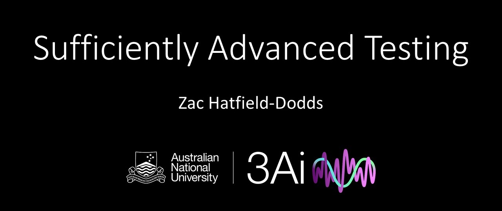Does Hypothesis work with type annotations at all? If you annotate the code, say an argument or an attribute is an integer, can it automatically generate a strategy based on that?
Yes it can. If you decorate a test with @given(value=hypothesis.infer) and you type-annotated
the value argument that works. We also have the
st.builds()
strategy, which takes some class or function and then strategies corresponding to the arguments for it.
If you have type annotated required arguments with no user supplied strategies, st.builds()
will recursively infer how to build it. That was a hard feature to implement across Python versions!
Can you use asyncio and coroutines with Hypothesis?
Hypothesis natively only calls sync functions mostly because it's hard to know what event loop to
use. If you're using something like
pytest-asyncio or
pytest-trio they have plug-ins
which actually support Hypothesis, they understand how to insert a shim which converts async to sync code for
us, so you can write async test functions if you use a test runner which supports that.
It seems like the biggest advantage of this is that you really can go into your testing with very little assumptions as to where the bugs might be found. With the targeted PBT methods you're then adding some assumptions back in and so is there any disadvantage to kind of leading your tests down the wrong garden path?
Potentially, so this is one of the reasons I would think of targeting as a potentially fragile technique. If it turns out that your thing is particularly vulnerable to very small inputs but you've targeted very large inputs, it's gonna spend most of its time generating inputs which won't find those small bugs. So part of the design would be making sure it balances a little between generating things that's been told to and other, less directed, exploration.
Follow-up to the annotation question - does Hypothesis work with protocols such as protobuf or thrift, like you can invert the underlying interfaces type?
There is a third-party extension for protobufs - you can hand it a schema and it will generate valid messages. In general we have support for a couple of different schema formats including type annotations, regular expressions, context-free grammars, and a few others. There are many more in third-party extensions and of course you can do it yourself: just write a function which takes some schema of whatever kind and returns a strategy for things that match it. I don't think there's a thrift extension yet but nor do I think it'll be that hard to write your own.
Does Hypothesis natively do operating system testing or do you have to do something else to get that kind of?
Hypothesis is really designed for testing Python functions or Python code. You could write Python tests which themselves test operating system function but for compiled code I turn first to something like American Fuzzy Lop, which is a dedicated machine code fuzzing tool. Hypothesis does not by default test across multiple operating systems but if you had a function which ran some piece of code on multiple operating systems you could then use Hypothesis to assert that they all return the same result.
How do you convince your teammates to use Hypothesis if you love it and your teammates don't? What do you do?
Install it first! The most effective way I've found is to migrate just a couple of tests. Spend an afternoon on it, and if you find a bug your teammates will care about, first get the bug report in and then tell them you found it with Hypothesis.
If you can convince enough people to get it running regularly in CI, incrementally adding or migrating property-based tests as I showed earlier is usually pretty easy.
How do you go about testing machine learning stacks and data science stacks in general?
That one is hard right this is part of the problem of how do we even know what the correct answer is sometimes there are properties you can check so after each training epoch for example you could check that the model weights have changed for every layer or you could make assertions about the balance that probabilities regardless of what they end up being must always be between zero and one or that adding certain desirable features does not decrease the score when you classify things like that so well you can't test the exact expected output you can still tell something about often if you perturb the input what kind of change do you expect in the output especially with machine learning that won't always indicate you have a bug it might just be that you've misunderstood your system it's hard.
This is a question on fuzzing in general. Sometimes fuzzing can catch a lot of issues, but they're rarely reproducible in production and testing compliance can make the code much more complex and more defensive without adding value in production. What's your opinion that?
Sometimes you just don't care about certain bugs my instinct would always be try to catch that stuff when you're validating your inputs so whatever the bug is right either it is a bug that we care about for whatever reason in which case it will be good to return an explicit error or my view is it's not something we should consider a bug at all. Maybe that behaviour is less than ideal but my view of a bug really is that it's something we would want to change about our code in order to consider it fixed. There are some people who dislike Hypothesis because it finds all kinds of ways to trigger exceptions that they just don't want to hear about because there are hundreds of them and they already have a thousand open tickets. I'm sympathetic. I've been there too. Ultimately no testing, no analysis, no correctness technique is actually useful if you don't want to act on the results. So in much the same way as I would not say the type checking is suitable for every codebase, really intensive testing is not always suitable for every codebase but for when it is I hope you consider some of the tools I've spoken about today.
This transcript is under CC-BY-NC-ND or ask-me-for-a license.